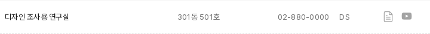
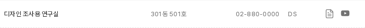

연구실 자료 링크를 더 또렷하게
기본 회색 변경 제안 · 앱 미적용먼저, 확정하고 적용한 내용
검색: 기본 #737373 → 호버 #404040. 검색 실행 세 곳의 클릭 영역을 확보했다.
초점: 2px 선 / 2px 간격. 밝은 면 #404040, 어두운 면 흰색, 경계는 두 색을 쓴다. 교과목 화살표·헤더 조작·검색·교수 정렬에 적용했고 실제 네 장면이 승인 견본과 일치했다.
입력: 추가 초점 선 없이 기존 캐럿을 유지한다. 나머지 컴포넌트의 초점 연결은 4단계에 남는다.
이번에는 왜 색을 진하게 할까?
PDF·영상 링크에는 상시 보이는 글자 없이 그림만 있다. 기존 옅은 회색은 흰색·옅은 회색 배경에서 자료 링크를 구별하기에 대비가 낮다.
현재 #a3a3a3
흰색 배경 2.52:1
#fafafa 배경 2.42:1
추천 #737373
흰색 배경 4.74:1
#fafafa 배경 4.54:1
조작 대상을 식별하는 필수 그림에는 인접 색과 3:1 대비를 요구한다. 호버 후 진해지는 것만으로 기본 상태의 낮은 대비를 해결할 수 없다. WCAG 1.4.11.
기존 회색 단계 중 한 단계 진한 값을 쓰는 제안이다. 호버 #262626, 아이콘 그림·크기·배치는 유지한다. 주황이나 다른 옅은 회색 사용처를 일괄 변경하지 않는다.
실제 목록에서 비교
기존 · #a3a3a3

추천 · #737373

PDF 그림은 20×20px, 영상 그림은 18×12px다. 두 링크 사이 간격은 12px여서 이번에 그림이나 클릭 영역을 키울 이유는 확인되지 않았다. 키보드 도달과 기존 호버 색 변화도 확인했다.
이번 판단 · I-Q4
연구실 PDF·영상의 기본 회색을 #737373으로 진하게 할까?
승인 후 기본 색을 적용하고, 두 자료 링크에는 이미 확정한 밝은 면 초점 규칙도 연결한다. 적용 확인 뒤 아이콘의 기반 기준과 4단계 이관 범위를 정리하고 배치·간격으로 넘어간다.